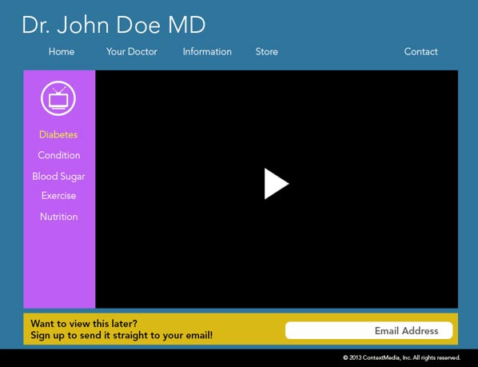
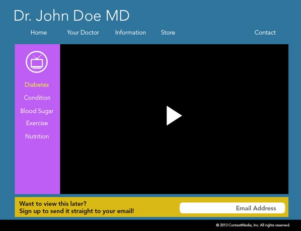
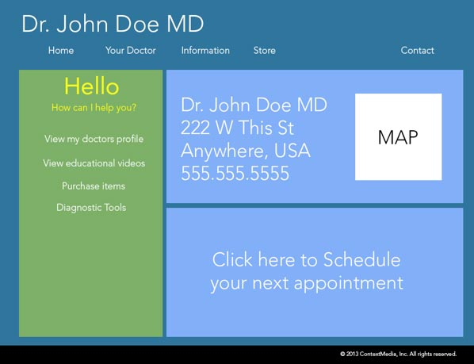
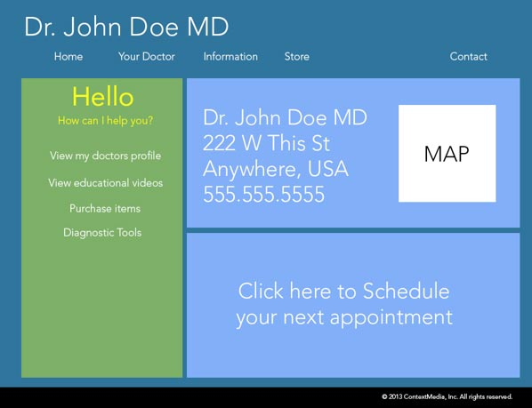

UX/UI Contextmedia

Project Requirements
Problem: Doctors feel patients dont remember the vital information they are given during the examination. Patients feel as thought they can not remember the vital information given to them during the examination about their condition.
Solution: A white label website/mobile app with physician supported information regarding, cardiology, diabetes, neurology, and rheumetology.
Rapid prototyping for this project was done in Illustrator, Photoshop, and Invisionapp. The project was done through Lean methodology with problem/solution interviews, and usability testing drove several iterations of the project over 7 weeks.
Requirements of this project before production:
- Contextmedia supplied videos
- Assessment screening tools for patients of varying levels of conditions
- Recommended products.
- Check the next appointment.
- Easy navigation and simplistic design for a demographic of patients ages 25-70.
5 member team consisting of 1 sales, 1 marketing, 2 product design, 1 web developer.
The screenshot is the final iteration of the project based on the solution interviews and usability test.
 


 
